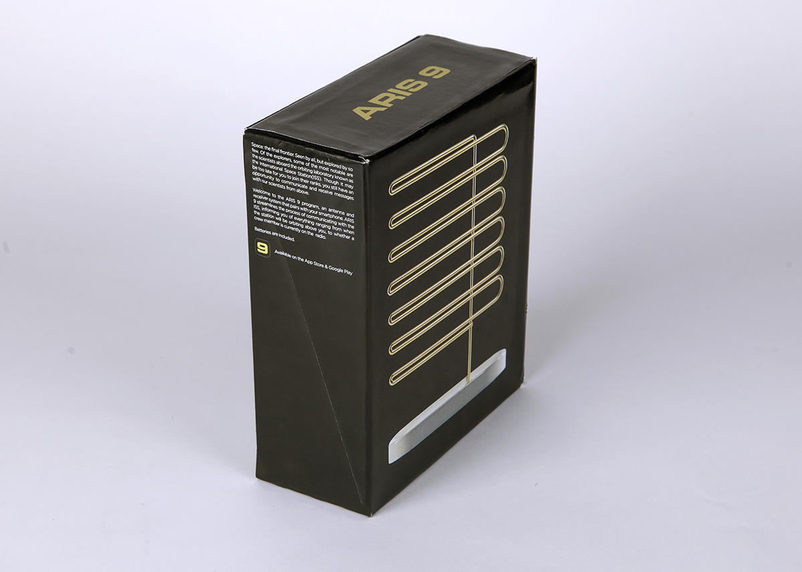
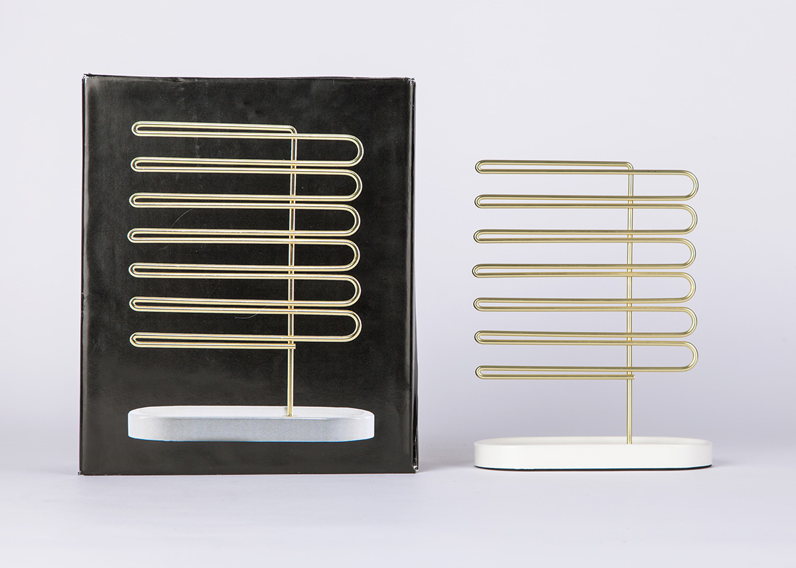
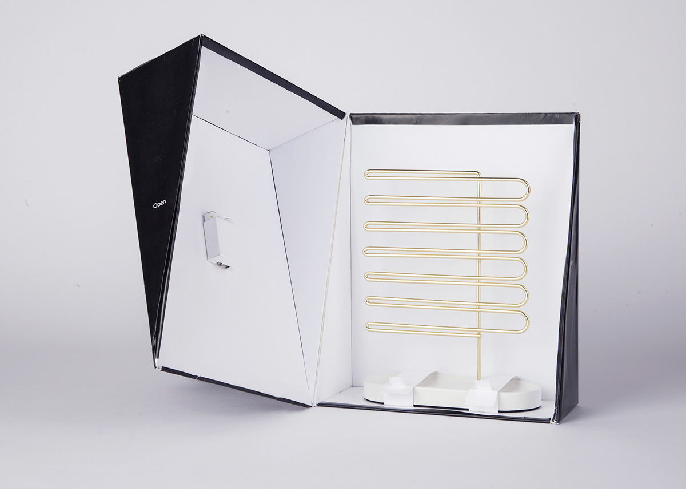
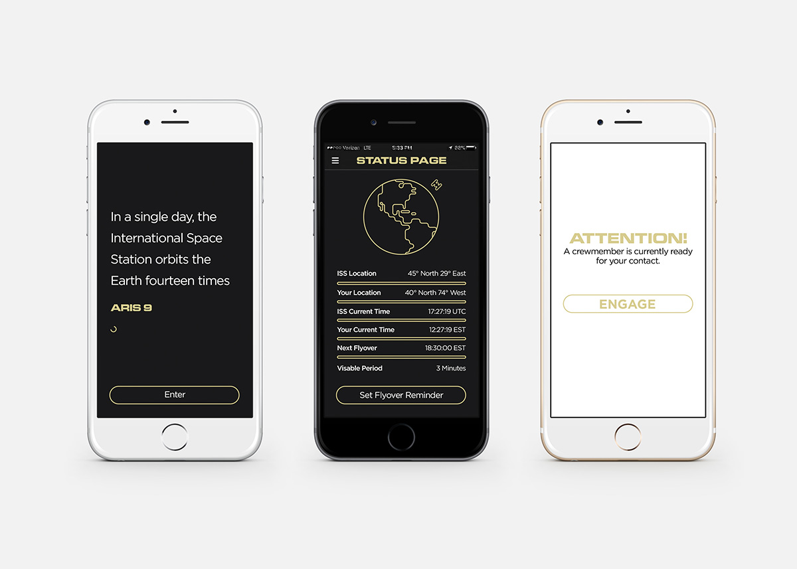
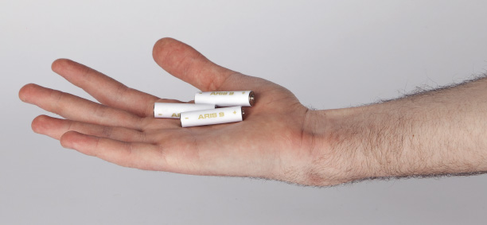

ARIS 9 is an antenna and receiver system that pairs with your smartphone. It streamlines the process of communicating with the ISS, informing you of everything ranging from when the station will be orbiting above you, to whether a crew member is currently on the radio. Many thanks to Eugénie De Loynes for designing the antenna.
    